Step 6 – Audit (post-run checks)
Purpose: confirm that all subjects produced stats outputs and catch failures quickly.
Commands used:
# how many finished
grep -R "execution finished" /data/projects/STUDIES/LEARN/fMRI/RSA-learn/derivatives/afni/IndvlLvlAnalyses/*/output.proc.*LEARN_RSA_runwise_AFNI | wc -l
# list missing stats
RESULTS=/data/projects/STUDIES/LEARN/fMRI/RSA-learn/derivatives/afni/IndvlLvlAnalyses
TIMING=/data/projects/STUDIES/LEARN/fMRI/RSA-learn/TimingFiles/Fixed2
for d in $TIMING/sub-*; do
id=${d##*sub-}
stats="$RESULTS/$id/${id}.results.LEARN_RSA_runwise_AFNI/stats.${id}+tlrc.HEAD"
[ ! -f "$stats" ] && echo "$id"
done | sort -n
# scan errors
egrep -R "ERROR|FATAL|FAILED|ABORT" \
/data/projects/STUDIES/LEARN/fMRI/RSA-learn/derivatives/afni/IndvlLvlAnalyses/*/output.proc.*LEARN_RSA_runwise_AFNI | head -n 50
Example beta map snapshots (sub‑1290) — click to expand
Four peer×feedback betas (one per run), rendered with `@chauffeur_afni` and saved as PNGs:| Condition | Axial | Coronal | Sagittal |
|---|---|---|---|
FBM.Mean60.r1 |
 |
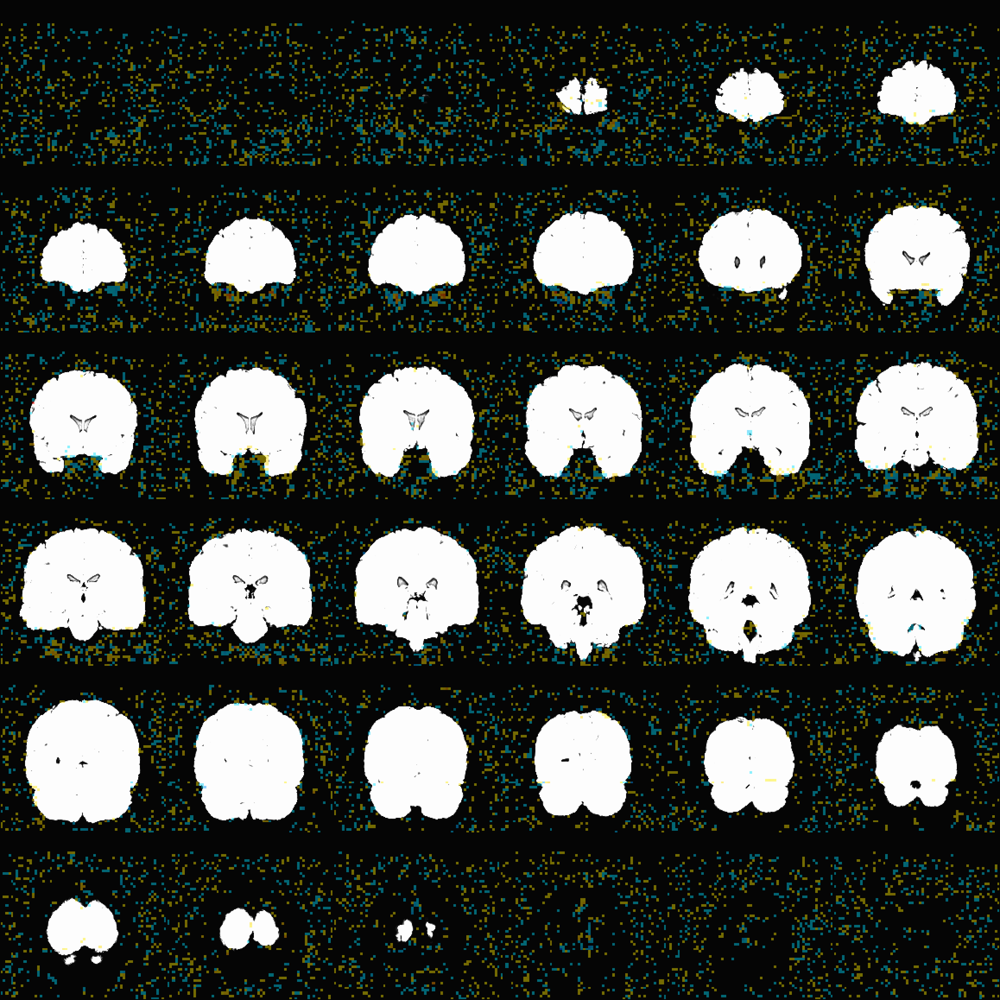 | 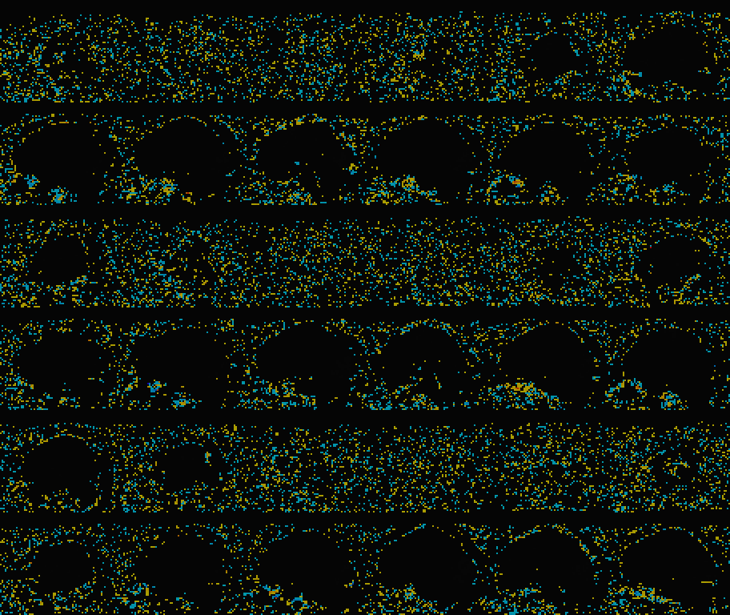 |
FBN.Mean80.r2 |
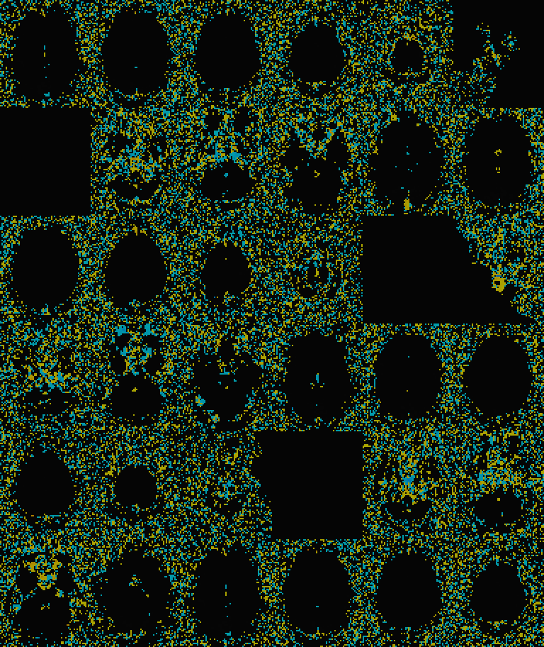 | 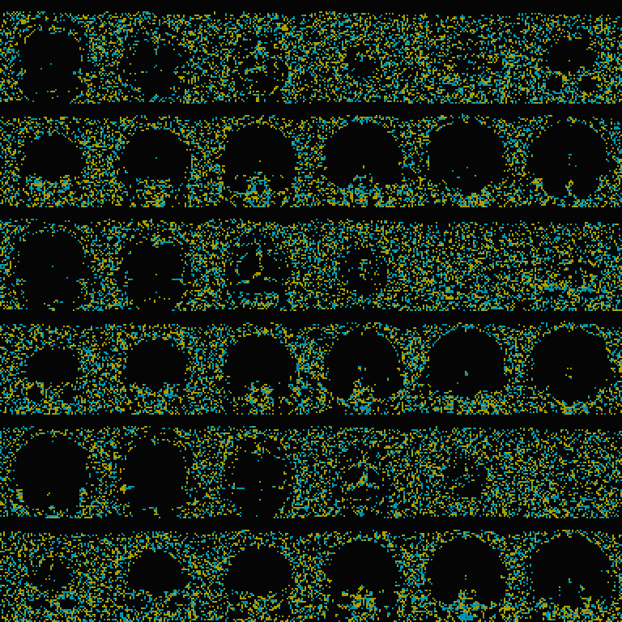 | 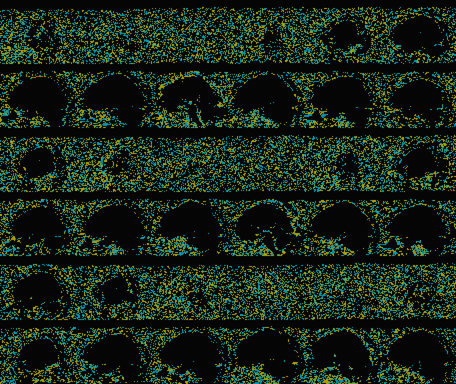 |
FBM.Nice60.r3 |
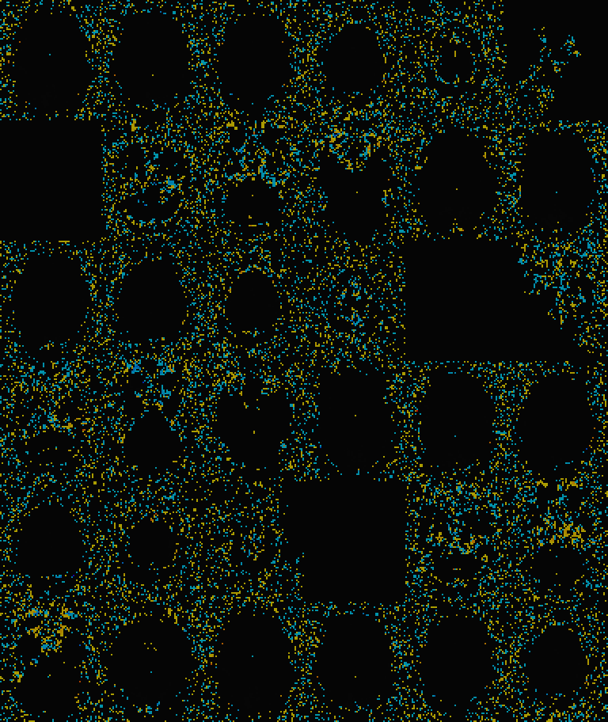 | 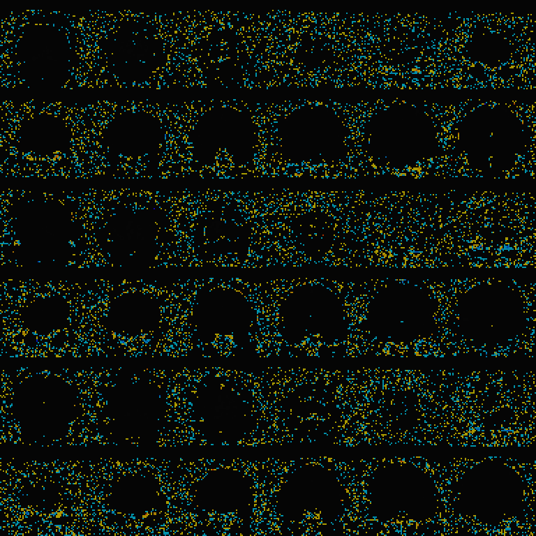 | 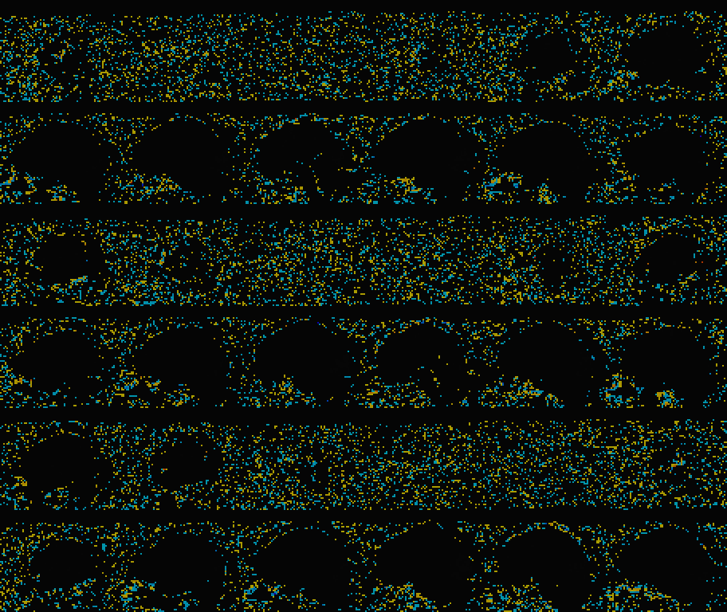 |
FBN.Nice80.r4 |
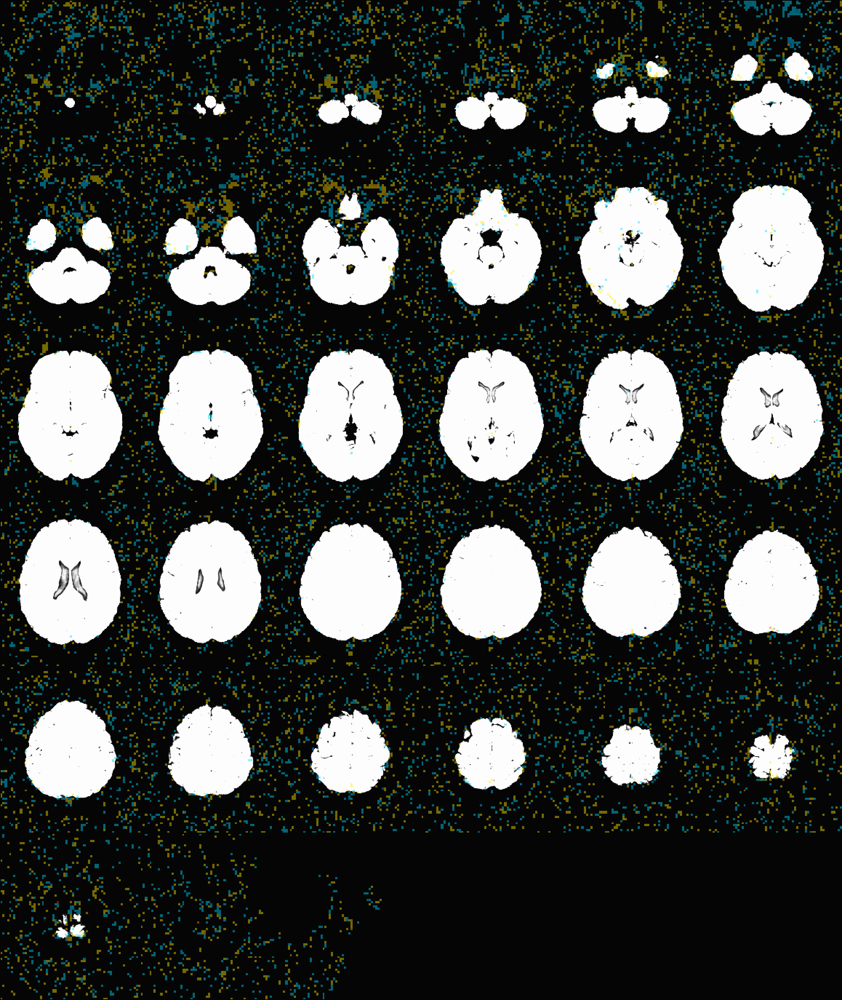 | 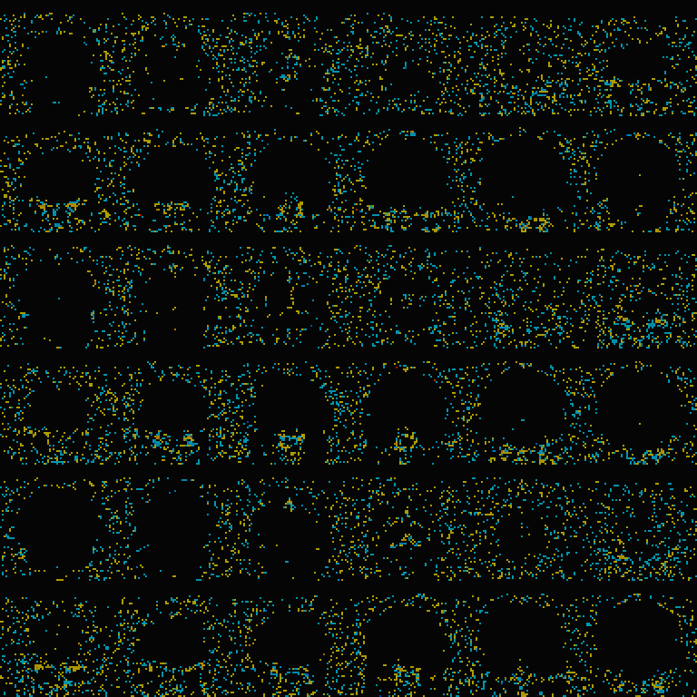 | 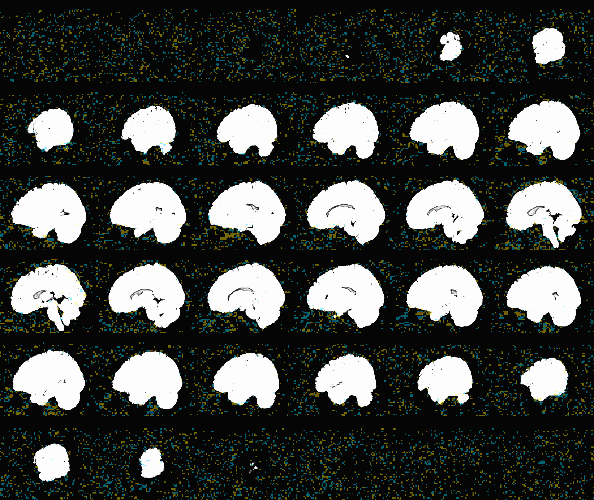 |